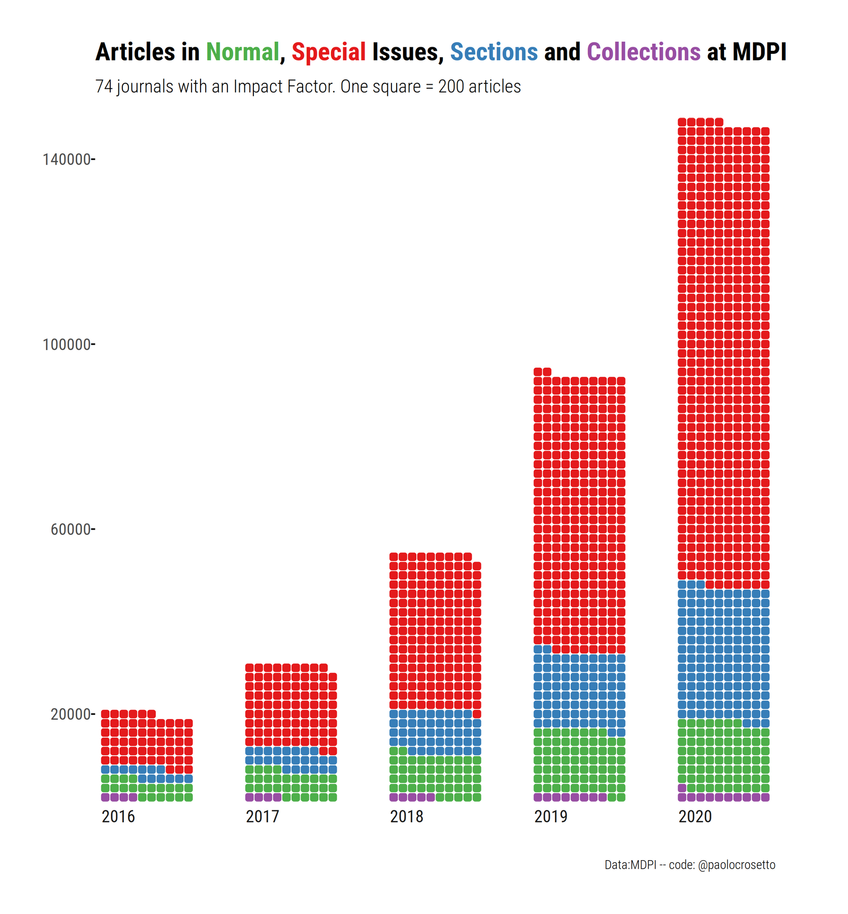
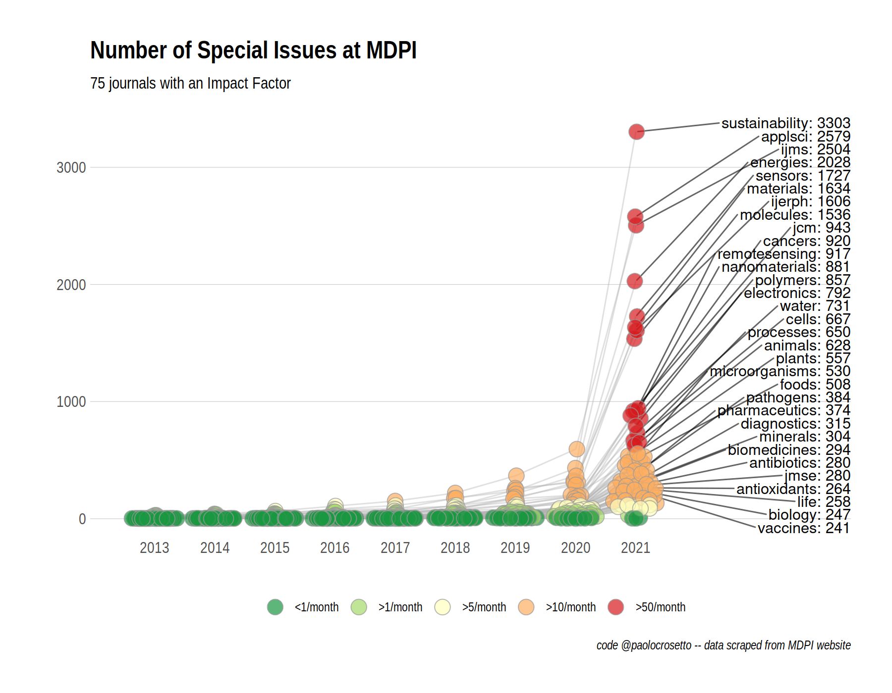
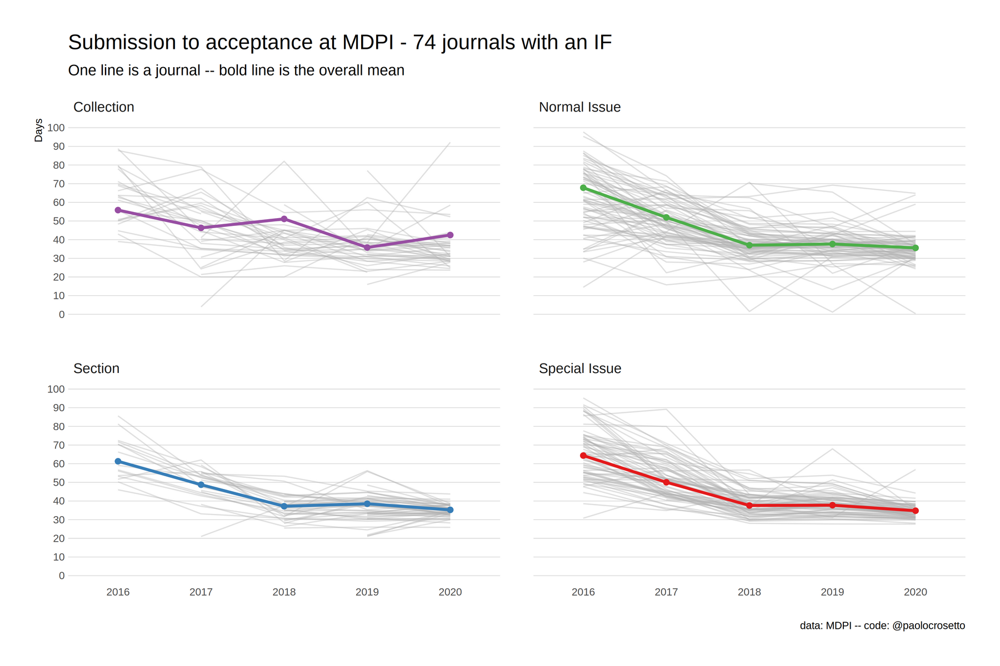
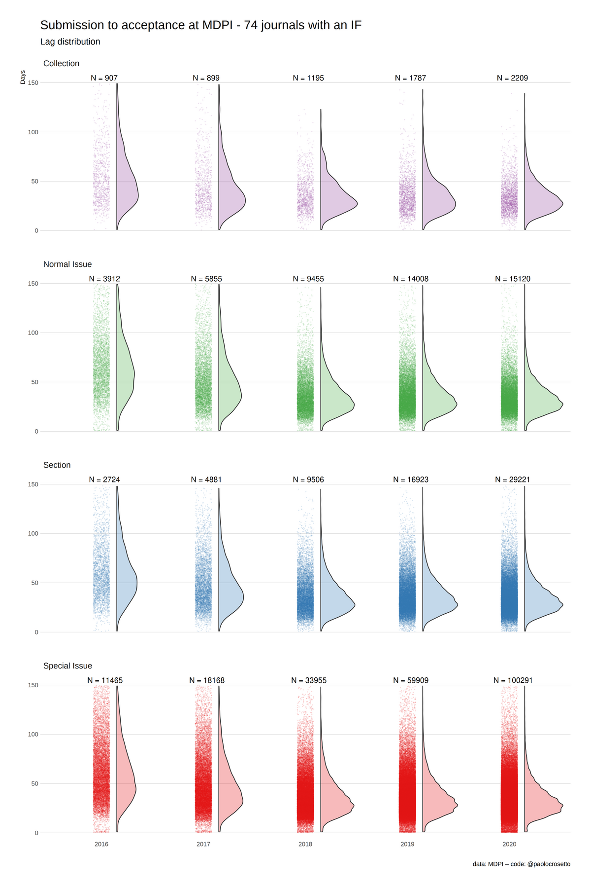
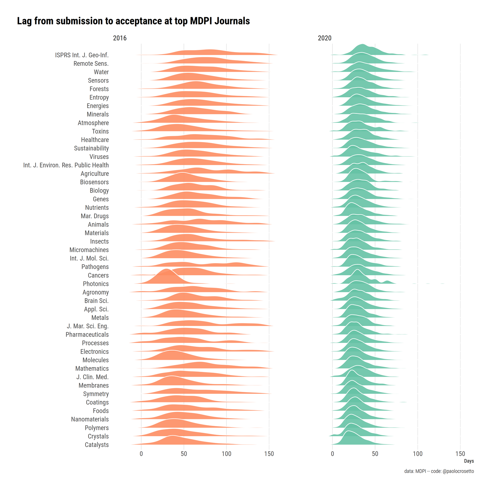
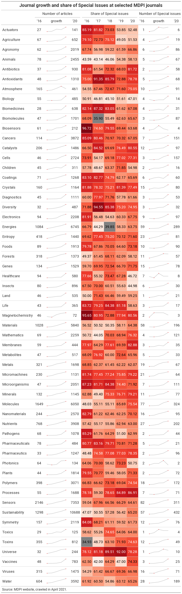
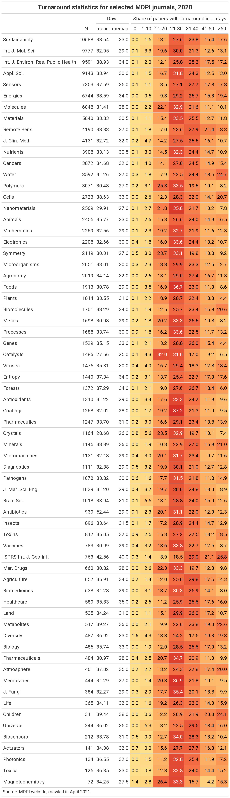

Is MDPI a predatory publisher?
Edit April 20th, 2021: thanks to Christos Petrou I found a bug in my code. I was considering both “Section” and “Collection” articles as Speical Issue. The whole analysis has been changed to accommodate the new data. I also acknowledged in the text the arguments of Volker Beckmann, who develops a coherent defense of MDPI practices and disagrees with my overall take; and inserted references to what MDPI (and traditional publishers) are doing for the Global South inline at the end of the piece, thanks to input from Mister Sew, Ethiopia.
This post is about MDPI, the Multidisciplinary Digital Publishing Institute, an Open-Access only scientific publisher.
The post aims to answer the question in the title: “Is MDPI a predatory publisher?” with some data I scraped from the MDPI website, and some personal opinions.
Tl;dr: main message
So, is MDPI predatory or not? I think it has elements of both. I would name their methods aggressive rent extracting, rather than predatory. And I also think that their current methods & growth rate are likely to make them shift towards more predatory over time.
MDPI publishes good papers in good journals, but it also employs some strategies that are proper to predatory publishers. I think that the success of MDPI in recent years is due to the creative combination of these two apparently contradicting strategy. One — the good journals with high quality — creates a rent that the other — spamming hundreds of colleagues to solicit papers, an astonishing increase in Special Issues, publishing papers as fast as possible — exploits.This strategy makes a lot of sense for MDPI, who shows strong growth rates and is en route to become the largest open access publisher in the world. But I don’t think it is a sustainable strategy. It suffers from basic collective action problems, that might deal a lot of damage to MDPI first, and, most importantly, to scientific publishing in general.
So that’s the punchline. Care to see where it stems from? In the following I will
- focus on the terms of the problem;
- develop an argument as to how the MDPI model works;
- try to give some elements as to why the model was so successful;
- explain why I think the model is not sustainable and is bound to get worse over time.
I’ll do so using some intuitions from social dilemmas and econ 101, a handful of personal ideas, and scraped data from MDPI’s website. The data cover the 74 MDPI journal that have an Impact Factor. They represent about 90% of all MDPI published articles in 2020 (somewhat less for the previous years, as MDPI growth has concentrated in their bigger journals. You find the data & scripts to reproduce the analysis in the dedicated github page.
Ready? Let’s go.
The problem
Scientists are by and large puzzled by MDPI.
On the one hand, MDPI publishes journals with high impact factor (18 journals have an IF higher than 4) many of which are indexed in Web of Science. Many, if not most papers are good. Several distinguished colleagues in nearly all fields served as Guest Editors or as Editors for their journals, often reporting positive assessments. MDPI is Open Access, so it does not contribute to the very lucrative rent-extraction at the base of Elsevier & other traditional publishers. MDPI’s editing is fast, reliable, professional; publication on the website is swift, efficient and smooth — all things that are hard to say of other, traditional, publishers. Several MDPI journals are included in the rankings used by different states to evaluate research and grant promotions to academics, for instance Sustainability is “classe A”, the highest possible rank, in Italy (source: ANVUR).
On the other hand, MDPI is known for aggressively spamming academics to edit special issues, often in fields that are far away from the expertise of the recipient of the frequent and insisting emails. Twitter is full of colleagues complaining that they get several invitations per week to contribute to journals they didn’t know existed and that lie outside of their domains, for instance here, here or here. MDPI even asked Jeffrey Beall, the author of Beall’s list of predatory publishers, to edit a Special Issue in a field that is not his own. It gets further than annoying emails, though. In 2018 the whole editorial board of Nutrients, one of the most prestigious MDPI journals, resigned en-masse lamenting pressures from the publisher to lower the quality bar and let in more papers.
This duality has generated some debates in several different places, among others in two posts by Dan Brockington here and here, in a post on the ideas4sustainability blog by Joern Fischer, and in the scholarly kitchen blog.
A predatory publisher is a journal that would publish anything — usually in return for money. MDPI rejection rates make this argument hard to sustain. Yet, MDPI is using some of the same techniques of predatory journals. So the question is simple: if you are a scientist, should you work with MDPI? Submit your paper? Review? (Guest) edit for them? Is MDPI predatory?
MDPI’s growth: how?
MDPI has had an impressive growth rate in the last years. It went from publishing 36 thousand articles in 2017 to 167 thousands in 2020. MDPI follows the APC publishing model, whereby accepted articles have to pay an Article Processing Charge (APC) before they are published. The APC has increased over time at MDPI. It can go up to more than 2000 CHF — MDPI is based in Switzerland — but there are several waivers and discounts. MDPI reports the average APC per article in 2020 amounted to 1180 €. Calculations by Dan Brockington show their revenue increasing from 14 mln $ in 2015 to 191 mln $ in 2020.
To know more about them, see their Annual Report 2020.
How did MDPI reach such high levels of growth? By cleverly exploiting the publish or perish policy widespread in academia, the fact that several countries mandate or suggest Open Access publications, and the rise of formal requirements for tenure and promotion within academia. But this state of affairs is independent of MDPI and anyone could have profited from it, though didn’t. So how?
As far as I can see, the success of MDPI relies on two key pillars: a lot of special issues and a very fast turnaround.
An explosion of Special Issues
Traditional journals have a fixed number of issues per year — say, 12 — and then a low to very low number of special issues, that can cover a particular topic, celebrate the work of an important scholar, or collect papers from conferences. MDPI journals tend to follow the same model, only that the number of special issues has increased in time, to the point of equaling, surpassing, and finally dwarfing the number of normal issues. Moreover, special issues are usually proposed by a group of scientists to the editors of the journal, who accept or reject the offer. At MDPI, it is the publisher who sends out invitations for Special Issue, and it is unclear which role, if any, the editorial board of the normal issues has in the process.
Virtually all of MDPI’s growth in the last years can be traced back to Special Issues.
The figure below shows the growth in articles for 74 journals with an IF at MDPI, dividing them between articles published in normal issues, special issues, collections and sections. Sections are a way to create several distinct branches of a sigle journal. Collections seem more similar to special issues, since they have their own collection editor. Special issues covered already the majority of papers in 2017 (it was not so earlier on, but I have article data from 2017 only), but grew rapidly from then on. While the number of normal issue articles increased 2.6 times between 2016 and 2020, the number of SI articles increased 7.5 times. At the same time, the number of articles in Sections increased 9.6 times, while Collections increased by 1.4 times. Articles in SI now account for 68.3% of all articles published in these 74 journals.

MDPI journals are becoming more differentiated, through the use of Sections, and they rely more and more on special issues.
The explosive SI growth is reflected also in the number of special issues, overall (table) and by journal (figure).
| 2013 | 2014 | 2015 | 2016 | 2017 | 2018 | 2019 | 2020 | 2021* |
|---|---|---|---|---|---|---|---|---|
| 388 | 475 | 710 | 990 | 1386 | 2342 | 4096 | 6756 | 39587 |
Across the 74 journals, there were 388 Special Issues in 2013, about five per journal. In 2020, there were 6756 SIs, somewhat less than a hundred per journal. The provisional data for march 2021 counts 39687 SIs that are open and awaiting papers — about 500 per journal. Not all of them will go through — many will fail to attract papers, others will be abandoned by the Guest Editors — but in all likelihood SIs in 2021 will be much more numerous than in 2020.
SIs increase at all journals, in some cases exponentially. Some have unbelievably high number of SIs. In March 2021, Sustainability had 3303 open Special Issues (compared to 24 normal issues). These are 9 SIs per day, just for Sustainability. 32 MDPI journals have more than 1 open SI in 2021 per day, including Saturday and Sundays.

The “Journal Growth” table in the data appendix at the end of this post reports the growth of articles and number of SIs for each MDPI journal that published at least 100 articles in 2020. It also shows the share of articles that appear in SI rather than in the normal issues. This share has followed different paths in different journals, mainly because of the rise of Sections and Collections, but is still very high for virtually all journals.
Are Special Issues a problem?
SIs are good because they pack together similar articles, increasing the readability of an ever-growing literature. They can contribute to the birth or growth of research teams, consolidate networks or help build new ones, and be a place where to carry out interdisciplinary research, that is often squeezed out of traditional disciplinary journals.
But they ought to be special, as the name says, and they ought to be under the control of the original editorial boards. In most (if not all) non-MDPI journals, the SIs are managed by the journal’s editorial board, together with the guest editors. Not so at MDPI. It is the publisher that sends out the invites (often, mass-sending them without much regard to the appropriateness of the invitations). This, coupled with the exponential explosion of SIs, marginalises the editors of the original journal. The people that created the reputation of the journal in the first place are sidestepped by an army of MDPI-invited Guest Editors.
While I will discuss later the implications of the SI model adopted by MDPI, I think the data prove beyond doubt that the most important MDPI journals are turning into collection of sometimes loosely related Special Issues at an accelerated pace. Normal issues are disappearing.
A coordinated reduction of turnaround times
Traditional publishers can be extremely sluggish in their turnaround. Scientists share horror stories about papers stuck in review for years. The situation is particularly bad in some fields (economics: I’m looking at you) but it is generally less than optimal.
MDPI prides itself on its very fast turnaround times. In the Annual Report 2020 MDPI reports an average time to a first decision of 20 days. This is extremely fast. A paper after submission must be assigned to an editor; this editor has to find an associate editor (or not), and then find referees. It is hard to find the correct people to review a paper, and these might be not available. Once the referees have been found and have accepted, they need time to make their report. Then the editor has to read the reports and make a decision. 20 days is really fast.
But MDPI does not provide aggregate statistics on the time from submission to acceptance. This includes revisions, and is crucial to understand how the editorial process works. To get this data, I scraped MDPI’s website. The information is public — for each paper, we know the submission date, the date when the revised version was received, and the acceptance date. The aggregate results are shown in the figure below. Three main takeaways: 1. there is not much difference between normal, special issues, sections and collections. 2. MDPI managed to halve the turnaround times from 2016 to 2020. 3. the variance across journals has gone down at the same time as the mean.

But these are just means. Surely there is a lot of heterogeneity in the turnaround, and some papers will take their time. There could be hidden heterogeneity also by field — economists have shown to have different reviewing times and practices than, say, virologists. Let’s have a look.
Below is the raincloud plot of the overall distribution (cut at 150 days, for the sake of visualisation. This leaves out about 3% of the papers in 2016, but, a further indication of the shrinking of turnaround times, only 0.3% of papers in 2020). On the left, each point is a paper. On the right, you see the kernel density estimation. There is heterogeneity, but it is rather low, and it is being dramatically reduced. The rather flat distribution of 2016 has been replaced by a very concentrated distribution in 2020. The distributions for normal and special issues are similar, with some more variance for SI articles.

Are there differences by journal, or field? After all we are talking here of different people, from different fields, and thinking back to the SI explosion, at an army of heterogeneous and uncoordinated guest editors. Below you find the distribution of turnaround times for the main MDPI journals (cut to 150 days).

The really striking finding here is that there is virtually no heterogeneity left. The picture from 2016 is as you’d expect: fields differ, journals differ. Some journals have faster, other slower turnaround times. Distributions are quite flat, and anything can happen, from a very fast acceptance to a very long time spent in review. Fast forward to 2020, and it is a very different world. Each and every journal’s turnaround times’ distribution shrinks, and hits an upper bound around 60 days. The mean is similar everywhere, the variance not far off.
This convergence cannot happen without strong, effective coordination. The data unambiguously suggest that MDPI was very effective at imposing fast turnaround times for every one of their leading journals. And this despite the fact that given the Special Issue model, the vast majority of papers are edited by a heterogeneous set of hundreds of different guest editors, which should increase heterogeneity.
So: hundreds of different editorial teams, on dozens of different topics, and one common feature: about 35 days from submission to acceptance, including revisions. The fact that revisions are included makes the result even more striking. I am surely slow, but for none of my papers I would have been able to read and understand the reports, run additional analyses, read further papers, change the wording and/or the tables, and resubmit within one week of receiving the reports — unless revisions were really minor. Can revision be minor for so many papers?
About 17% of all papers at MDPI in 2020 — this is 25k papers — are accepted within 20 days of submissions, including revisions. 45% — this is 66k papers — within 30 days. A (too much) detailed table in the data appendix at the end of the post shows turnaround times for all top MDPI journals. Its main point is to provide full info for particular journals, but also to highlight how little variance there is.
Is it bad to have very fast turnaround times?
Per se, no. Fast turnaround is clearly an asset, and MDPI shines in this. They did cut all the slack to referees and editors, and this could be a good thing — papers usually spend most of their editorial lives, unread, in the drawers of busy referees and editors (economists, I am again looking at you).
But cutting editorial and referee times is good for science only if the quality of the peer review can be kept up even at this very fast pace. A well written referee report might take several days. People are busy with their lives and do not have just referee reports to write; good scientists’ time is scarce. Editorial decisions can also take time. All but the smallest revisions require substantial amounts of time.
Again, I will expand below on the implications of these extremely short lags, but let’s note that lags have decreased for all journals in a coordinated way and are now at the lower limit of what is compatible with quality reviews + revisions.
MDPI’s growth: why?
How could MDPI grow so much?
Whenever something sells so fast, the answer is trivial: demand. What MDPI sells is obviously in high and growing demand. It wouldn’t be enough for MDPI to try to sell it if there weren’t scientists picking it up. But what do they sell that competitors don’t?
MDPI sells high acceptance rates and very fast turnaround times, in special issues that are very likely to match your specific field and ran by a colleague you know, within journals that have a decent-to-high impact factor and that count in the official rankings of several universities and public agencies in the western world. Exactly what scientists all over the planet, and especially in developing economies, need to keep competing in the publish or perish landscape of modern academia.
Getting into the details. Is acceptance high? it is at around 50% at most MDPI journals. While this is far from predatory practices (that would be 100%) and shows that MDPI journals do reject papers, acceptance rates are an order of magnitude higher than in most, say, economics journals.
Does MDPI cover all niches? The very fine grid of Special Issue guarantees that you’ll find an SI that seems tailored for you — if not, you can always accept MDPI’s invitation and tailor one to suit yourself. Impact Factor is high and the fact that the journals count in national rankings covers your back. It’s a winning game.
The Special Issue model is key in providing incentives to contribute effort and to submit papers. Doing some serious editing activity is a requirement for tenure in many countries, so mid-career scientists will find the offer appealing; it offers an easy way to publish papers from multi-disciplinary groups often required to obtain research funds. At the same time, you are more likely to send your paper to a previously not known journal if a colleague you know runs the Special Issue. Overall, the Special Issue generates incentives and increases trust in the system. It also motivates editors to convince fellow scientists to contribute.
The second key element is the high Impact Factor of the top MDPI journals. The system wouldn’t work if there was no quality indicator. The high IF is what covers the scientists backs with respect to their funding agencies, employers, and colleagues. Yes, it’s not Nature. Yes, it’s not an exclusive top journal in my field. But look it has a good IF and it is growing. [and look, Dr. X invited me.] Must be good.
The fast turnaround time and the high acceptance rate are the icing on the cake: you have very high chances of getting a publication in what for academics is the blink of an eye.
As a firm, MDPI should be admired for pulling this extremely effective strategy. MDPI created a handful of journals with high IF from scratch. They devised the SI-based model. They managed to cut all slack times to zero and deliver an efficient workflow — mean times from acceptance to publication are down to 5 days in 2020 from nearly 9 days in 2016.
Still, I think this model is not sustainable, and stand a high chance of collapsing. It’s simple, really: it will likely collapse because journal reputation is a common pool resource — and MDPI is overexploiting it.
An unsustainable, aggressive rent extraction model
MDPI is sitting on a large rent — it controls access to something that is in demand and for which it faces little competition. The rent is created by perverse incentives in the academic system, where publications in high IF journals is at a very large premium, since careers and research financing depend on it. Thanks to their past efforts, MDPI sits on several dozen journals with moderate-to-high IF and good reputations.
They could have chosen to continue business as usual, slowly increasing the number of papers and the reputation. This is what a traditional publisher like Elsevier would have done. Elsevier makes money by selling subscriptions. The value of the subscription is given by the gems in your journal basket. So you take care of the gems, and never let them lose their shine. But MDPI sells no subscription. It makes money by the paper, and so chose instead to exponentially increase the papers at their gem journals.
MDPI strategy boils down to exploiting their rent, as fast and aggressively as they can, through the Special Issue model. The original journals’ reputations are used as bait to lure in hundreds of SIs, and thousands of papers, in a growth with no limit in sight.
Despite the best efforts and good faith of MDPI and of all the guest editors and authors involved, the quality of journals that are inflated so much and in this uncontrolled way is bound to go down. Thousands of SI generate a collective action problem: each individual guest editor has an incentive to lower a tiny bit the bar for his or her own papers or those of his or her group. As we know from Elinor Ostrom’s Nobel Prize winning work, collective action and common resources need careful governance lest the system break down. MDPI has chosen to give control of the reputation of its journals to hundreds of guest editors, with just loose or no control from the original editors, who were responsible for the journal reputation in the first place and who are also in the process drowned by a spiraling number of additional board members. Even if the vast majority of those aim for quality, the very fast turnaround times make it harder. MDPI made things worse by sending mass spam invitations to nearly every scientists on the planet to edit special issues, thus increasing the chance of getting on board less than conscientious guest editors that will exploit the system. When the system showed to work (that’s 2018 and 2019), MDPI doubled down sending even more invites (that’s 2020) and recently flooring the accelerator and mass-inviting special issues (500 per journal in 2021).
This is not sustainable, because it is impossible that there are enough good papers to sustain the reputations of any journal at 10 SIs per day. And even if there were, the incentives are set for guest editors to lower the bar. Reputation is a common pool resource, and the owner of the pool just invited everyone on sight to take a share.
If MDPI were a music major, this strategy would amount to, first, putting in effort to sign a dozen of very popular bands, and then, once the reputation is in place ask their friends (or indeed anyone with a guitar) to produce more records under the name of the rock stars, for a low fee. Musicians of all levels jumped in. U2 this year released one album, but there are 400 invited bands releasing their albums under the U2 franchise. Buy the records, they are all as good as the original!
I don’t know why MDPI is so aggressive in rent exploiting. They could have done it more slowly, and still reap substantial profits. The former CEO Franck Vazquez said in 2018 when the Nutrients Editorial Board resigned that he “would be stupid to kill his cash cow” (source). This rings true: why so aggressively exploiting their rent, knowing that reputation can decrease fast if journals are inflated? Still, the data show beyond doubt that MDPI is milking its bigger journals at increasing rates.
Economics offers some cues as to why aggressive rent extraction might be the best strategy for a firm in the situation of MDPI. In general, when you have a rent but feel that it might soon vanish, it is your best move to suck it dry, fast. It is the economic reason behind the fact that movie sequels suck, or that second albums are usually worse than the first. It is not the only reason, of course. But developing a good, say, teenage dystopian movie increases the likelihood that other producers will jump in on the fashion and copy you; and each further movie exploiting your trope decreases your rent, giving you incentives to hasten the production of your sequel, and market it when it’s not ready. If it is easy to copy your model, you’d better be your own cheap imitation brand, rather than waiting for others to take that role (incidentally, this mechanism is at work also in the fashion industry, as masterfully described in Roberto Saviano’s Gomorrah and confirmed by this criminology paper).
Why would MDPI think that their rent will vanish? I don’t know. I suspect it might have to do with the recent move to Open Access of the main traditional publishers, that are opening OA subsidiary of their main non-OA journals. Or to the increasing acceptance of repositories as arXiv as legitimate “publications”, that would make the whole “publisher” concept history. But that’s just a hunch, I have really no clue.
Whatever the reason, I think that MDPI is aggressively exploiting its rent. It is not predatory in the sense of publishing everything for money. Still, it is a misleading and dangerous practice. The reason why academics are puzzled by MDPI, and you can find people defending the quality of the papers and the special issues they read and/or were involved with and, at the same time, people that completely loath MDPI and deem it rubbish and predatory, is that MDPI is both things at the same time.
The problem is that bad money always crowds out good money. With MDPI pushing the SI model faster and faster, the balance will shift sooner rather than later towards deeming MDPI not worth working with.
What if I am wrong?
I might be wrong. There are many good sides of the OA model that MDPI adopts.
It is more inclusive, for one. It breaks the gate-keeping that is done by the small academic elites that control the traditional journals in many disciplines. It probably makes no sense in the 21st century to limit the number of articles in journals to, say, 60 a year, because back in the 20th century we printed the journals and space was at a premium, so breaking the (fictional and self-imposed) quantity constraint is a good thing.
All the above rings even more true for academics from the global South, that face even higher hurdles to publish in the rather closed and limited traditional journal. Mister Sew from Ethiopia has provided me with several references on how and how much traditional publishers exclude researchers from the Global South. Non Euro/West researchers account for as low as 2% of published papers, and have virtually no representation in editorial boards. Some traditional publishers deny access to IPs from several African countries. References here, here, here and in a special collection of articles on the role of OA for the global South here. MDPI features a much higher share of editors and papers from the Global South, and is as such a liberating force. At the same time, MDPI publication fees are very high and unattainable by researchers from the Global South.
The special issue model is also very good in many respects. It has potential to be a clever way of organizing science in the digital age. We still live within the empty shells of the 20th century way of publishing science. That gave us another form of rent extraction, traditional publishers with their incredibly high margins on the back of scientists. A more open form of knowledge exchange, leaner, open access, and organized around topics rather than journals can be promising.
Fast turnaround times across all journals could be a sign of real productivity and logistic advances from MDPI, without affecting the quality of reviews. Those would be extremely welcome and a breath of fresh air in academic publishing.
Volker Beckmann in the comments made also several arguments as to why in his own view MDPI quality is not going down and will not decrease in the foreseeable future. Check his points out in the comments.
If you have more thoughts on this and you think I’m wrong, I am happy to hear your thoughts. If you are from MDPI and want to reply, I am even more happy. This (too) long piece is meant as an exploration of an intriguing topic. And to scratch a personal itch, that I got when invited to guest edit for Nutrients, last summer, and was surprised to see how MDPI could be at the same time considered very good and very bad by colleagues.
Methods, data and code
The scripts to reproduce the analysis and the data are available on the dedicated github repo. The scrape was performed in march 2021, for the number of SIs, and in April 2021, for the turnaround times. All data is publicly available on MDPI’s website, and I just collected and analyzed what is otherwise public. I would like to thank Dan Brockington for extensive discussion, encouragement, and comments on an early draft of this post. Thanks also to Joël Billieux, Ben Greiner, David Reinstein, and all the colleagues on the ESA-discuss forum for discussions on MDPI and publishing.
Additional Tables and Data

